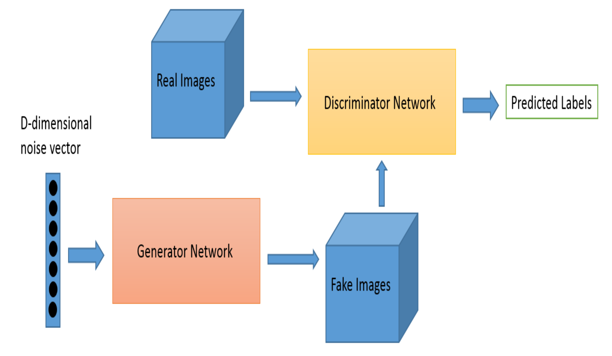
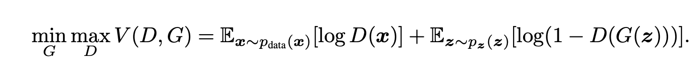
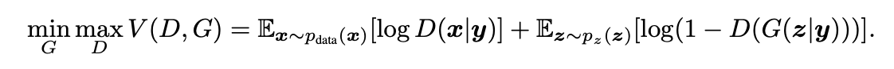
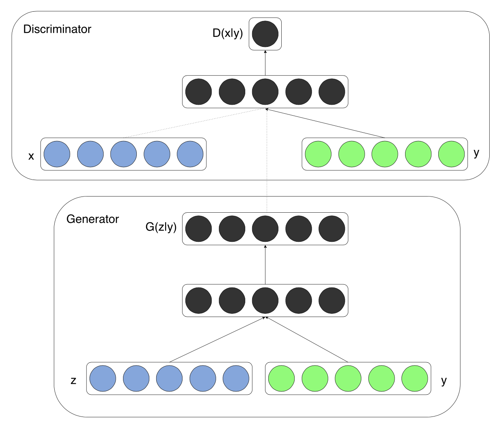

1. 生成对抗网络（GAN）简介#

概述 (Overview)#
GAN是Generative Adversarial Networks的缩写，在中文中被翻译为“生成对抗网络”，是一种人工智能技术。GAN是一种生成模型，可以生成逼真的图像、手写文字等虚假数据。正如其名称“生成对抗网络”所暗示的，GAN通过对抗性地训练两个不同的网络，生成与真实数据相似的数据，由于生成的数据没有固定的标签值，因此被归类为无监督学习的生成模型。
GAN最初由在谷歌大脑从事机器学习研究的Ian Goodfellow于2014年在神经信息处理系统大会（NIPS）上提出，此后在图像生成、视频生成、文本生成等领域得到了广泛应用。
在第一章中，我们将介绍GAN的概念、模型结构、评估指标和应用案例。在1.1节中，我们将介绍GAN的出现和概念，在1.2节中，我们将介绍GAN模型的结构、一种名为条件GAN（cGAN）的GAN模型以及GAN模型的评估指标。接下来，在1.3节中，我们将介绍应用GAN的案例，并在1.4节中了解GAN的局限性。
1.1. 概念 (Concept)#
生成对抗网络（GAN）由生成器（G，生成模型/生成器）和判别器（D，判别模型/判别器）这两个不同的网络组成，通过对抗性地训练这两个网络来实现其目标。生成模型（G）的目标是生成接近真实分布的假分布，而判别模型（D）的目标是确定样本是属于假分布还是真实分布。包含这两个模型的GAN的最终目标是生成接近“真实数据分布”的数据，因此，当判别器无法明确判断样本是真实还是假的（当将假样本和真实样本视为0和1时，值为0.5的边界）时，就达到了无法区分假样本和真实样本的最优解。提出者Ian Goodfellow在论文中以“警察和伪钞制造者”为例来解释GAN模型的概念。
图1-1 警察（左）和小偷（右）的图片
生成模型就像是试图制造出与真钞相似的假钞来欺骗警察的伪钞制造者，而判别模型则类似于试图检测伪钞制造者所制造假钞的警察。随着这种竞争的持续进行，伪钞制造者会接收到未能欺骗警察的数据，而警察则会接收到被伪钞制造者欺骗的数据，然后双方会进行对抗性学习。在这个游戏中的竞争会一直持续，直到伪钞与真钞无法区分，即给定样本是真实样本的概率接近0.5的值。当判别器确信为假时，其概率值为0；当确信为真时，其概率值为1；而当概率值为0.5时，则表示难以判断是假还是真。
在下一节中，我们将探讨GAN模型的结构、其一个分支——条件GAN（cGAN）模型，以及GAN模型的评估指标。
1.2. GAN 模型#
1.2.1. 模型结构#
GAN的架构如下图所示。

图1-2 GAN的架构（来源：Hamed Alqahtani. 2019. An Analysis Of Evaluation Metric Of GANs)
生成器（G）学习生成类似于真实数据的数据，而判别器（D）学习区分真实数据和G生成的假数据。GAN的目标函数如下，这是一个博弈论类型的目标函数，其中G和D两个玩家相互竞争以找到纳什均衡。

图1-3 GAN价值函数（来源： Ian J.Goodfellow. 2014. Generative Adversarial Nets)
在这里，V(D,G)的值是以概率值导出的，如果从D和G的角度分别来看这个公式，情况如下。
首先，从D的角度来看，当输入实际数据(x)时，D(x)会变大，log值也会变大，从而得到较高的概率值；而当输入假数据(G(z))时，log值会变小，从而得到较低的概率值。换句话说，D会逐渐更新，以便能够很好地区分实际数据和G生成的假数据。
在G中，通过将噪声z从零均值高斯分布传递到多层感知器来生成样本，并且当将生成的假数据G(z)作为输入提供给D时，会进行学习，使得概率值较高，就像实际数据一样。也就是说，会使D(G(z))的值升高，并且使整体概率值降低，换句话说，G会逐渐更新，以生成“D无法很好区分”的数据。
在实际进行学习时，不会同时训练G和D两个网络，而是在固定一个网络的状态下，单独更新另一个网络。
1.2.2. cGAN#
cGAN是条件生成对抗网络（Conditional Generative Adversarial Networks）的缩写，是一种生成器和判别器在训练过程中使用附加信息的生成对抗网络。与GAN相比，它在“从何处采样”和“数据集是否需要标签”这两个方面存在差异。通过使用cGAN，可以人为地生成所需类别的数据，并且在训练生成器和判别器时使用标签
从何处采样#
GAN
生成器从一个固定的先验分布（通常是高斯分布或者均匀分布）中采样随机噪声向量。以图像生成任务为例，生成器接收一个随机噪声向量作为输入，将其映射到数据空间（如图像空间），尝试生成与真实数据分布相似的样本。生成过程没有明确的条件约束，生成的样本是基于随机噪声的，具有一定的随机性和不可控性。
判别器接收来自真实数据集的样本和生成器生成的假样本进行判别，其目的是区分这两类样本。
cGAN
生成器不仅从先验分布中采样随机噪声向量，还会结合额外的条件信息（如类别标签、文本描述等）作为输入。在图像生成任务中，如果要生成特定类别的图像，生成器会根据输入的类别标签和随机噪声来生成对应类别的图像，使得生成过程具有可控性。
判别器同样接收真实样本和生成样本，但在判别时会同时考虑样本和对应的条件信息。例如，判别器需要判断给定某个类别标签的情况下，输入的图像是否是该类别下的真实图像。
数据集是否需要标签#
GAN
在训练过程中，GAN 通常不需要数据集带有明确的标签信息。它只关注数据的整体分布，通过生成器和判别器的对抗训练来学习数据的分布特征。生成器尝试生成与真实数据分布相似的样本，判别器尝试区分真实样本和生成样本，整个过程不依赖于数据的类别标签。
例如，在无监督的图像生成任务中，GAN 可以学习到图像的纹理、颜色等分布特征，但无法生成特定类别的图像。
cGAN
cGAN 的训练需要数据集带有标签信息。这些标签作为额外的条件信息，用于指导生成器生成特定类别的数据，同时帮助判别器更准确地判断样本的真实性。
例如，在图像分类数据集上训练 cGAN 时，每个图像都有对应的类别标签，生成器可以根据这些标签生成特定类别的图像，判别器可以根据标签判断图像是否符合该类别的特征。
简单来说，就是在生成器（Generator）和判别器（Discriminator）中添加表示特定条件的信息y，但此时y的形式并没有固定，所以可以有多种形式。例如，在识别手写数字的MNIST数据中，如果想要生成特定数字，就将该数字所属的类别标签作为附加信息y输入。在论文中，对想要生成的数字类别进行了独热编码（one-hot encoding），在MNIST数据集里，对这个类别进行独热编码需要10位，所以信息y的大小是10位。

图 1-5 cGAN Value Function (来源: Mehdi Mirza. 2014. Conditional Generative Adversarial Nets)
cGAN的价值函数如上所定义，与前面的GAN情况相比，差异点在于对于生成器和判别器各自添加的信息y，是条件概率。下面是cGAN的简单结构，可以确认在输入中y信息额外输入，并且输出的概率值是关于y信息的条件概率。

图 1-6 Conditional adversarial net (来源: Mehdi Mirza. 2014. Conditional Generative Adversarial Nets)
2014年11月在蒙特利尔大学首次发表的cGAN论文中，如下所示，从MNIST数据集生成所需数字（0到9分别）的结果以每行10行的结果图像的形式展示。

图 1-7 Generated MNIST digits, each now conditioned on one label
(来源: Mehdi Mirza. 2014. Conditional Generative Adversarial Nets)
1.2.3. 评估指标 (Evaluation Metrics)#
GAN的创始人Ian Goodfellow在2014年介绍了GAN之后，于2016年进一步发表了改进学习方式的技术。在论文中，作者们提到“GAN没有目标函数，这使得比较不同模型的性能变得困难”。也就是说，对于给定的GAN模型，通常没有普遍认可的评估方法，这在训练过程中选择最终的GAN模型、为证明GAN模型的实用性而选择生成的图像、比较不同的GAN模型架构等情况下会成为问题。
在2018年一篇阐述GAN评估指标优缺点的论文中，Ali Borji提到：“对于能够反映GAN模型优势和局限性的最合适指标，尚未达成一致意见。”如此，GAN模型的评估一直是基于生成图像在生成目标的领域语境下的质量。
在那之后的2019年，麦考瑞大学的Hamed Alqahtani发表的论文中，通过对GAN模型评估指标的研究，提出了10多个GAN模型的评估指标。根据Hamed的说法，GAN的评估指标大致分为定性指标和定量指标两类，通常定性指标因为需要人来评估图像，所以成本较高。
定性指标包括最近邻（Nearest Neighbor）、评分和偏好判断（Rating and Preference Judgement）、快速场景分类（Rapid Scene Categorization）等，定量指标包括FID（Fréchet Inception Distance）、IS（Inception Score）、模式得分（Mode Score）、最大均值差异（Maximum Mean Discrepancy）等。我们将在下面了解NVIDIA论文中在模型比较时核心使用的IS和常用的FID这两种指标。
Inception Score (IS)#
Inception Score是由Salimans等人提出的，是广泛用于GAN评估的指标。该指标使用预训练的神经网络来捕捉与类别标签相关的特征属性。下面是得出IS值的公式，它测量的是样本的条件分布p(y|x)和从所有样本中获得的边缘分布p(y)之间的平均KL散度程度（Average KL Divergence），这个值越高，可以解释为性能越好。但是，IS的缺点是它使用生成的图像而不是实际样本进行计算，并且如果每个类别只生成一个图像，即使多样性不足，p(y)也会接近均匀分布，这可能会扭曲性能。

图 1-8 Average KL Divergence (来源: Hamed Alqahtani. 2019. An Analysis Of Evaluation Metric Of GANs)
Frechet Inception Distance (FID)#
Frechet Inception Distance（FID）是一种用于评估生成图像质量一致性的指标。它通过比较实际数据和生成数据中提取的特征的均值和协方差，弥补了不使用实际数据分布的缺点。FID值越低，表示图像质量越好，这意味着实际图像和生成图像之间的相似度越高。简单来说，FID是比较生成样本的统计信息与实际样本的统计信息。
接下来的章节中，我们将探讨应用GAN的案例。
1.3. 案例 (Use Case)#
GAN在图像生成领域有着广泛的应用，以下是一些具体的例子。
1.3.1. 假图像生成 / NVIDIA#

图 1-9 Images generated using the CELEBA-HQ dataset
(来源: Tero Karras. 2018. Progressive Growing of GANs for Improved Quality, Stability, and Variation)
2017年，全球GPU设计公司NVIDIA公开的“不存在的人的图像”是GAN的一个典型应用案例。当时，NVIDIA提出了一种新的训练方法，该方法在图像质量、稳定性和多样性等方面比现有的GAN结果有所提高，其生成的图像达到了人眼难以辨别是真实人物还是虚拟人物的程度。
NVIDIA提出的GAN新训练方法的核心是，让生成器和判别器都从较低的“结果值”开始，随着训练的进行，通过逐步增加新的层，使模型能够非常缓慢地“学习”并逐渐成长。NVIDIA通过这种方式实现了比以前更高的IS值（GAN的评估指标），并且还提出了一个考虑图像质量和多样性的新评估指标。
此外，在论文中，NVIDIA展示了不仅可以生成与人相似的图像，还可以生成卧室、花盆、沙发、公交车等物体的真实图像，这也可以用于将低分辨率照片转换为高分辨率照片等受损图像的恢复。
1.3.2. 假奥巴马演讲视频 / University of Washington#

图 1-10 Fake Obama Video (来源: Supasorn Suwajanakorn. 2017. Synthesizing Obama: Learning Lip Sync from Audio)
2017年，华盛顿大学利用GAN制作并发布了美国前总统巴拉克·奥巴马的假演讲视频。该视频是从奥巴马前总统过去的演讲视频中提取声音，并制作出与该声音相匹配的口型合成的，是假的。在论文中，作者首先将音频输入转换为随时间变化的口型，然后生成逼真的口型，并将其插入到目标视频的口型部分。这样做是为了使最终合成前的口型序列与目标视频相匹配，并重新调整时间，使头部动作和输入语音能够自然地出现。视频可以在链接中观看。
1.3.3. Eye In-Painting / Facebook#

图 1-11 Eye In-Painting Examples from Facebook Inc.
(来源: Brian Dolhansky. 2018. Eye In-Painting with Exemplar Generative Adversarial Networks)
2017年12月，Facebook开发了ExGAN技术，并公开了将闭眼照片转换为睁眼照片的过程。这项名为“Real Eye Opener”的工作，是通过GAN生成逼真的假眼，并将其合成到闭眼照片上。它可以用于校正特定场景或无法重拍的照片中闭眼的情况。
1.4. 局限性#
到目前为止，我们已经了解了什么是GAN、GAN模型的内部结构和性能评估方法，以及应用GAN的案例。尽管GAN模型看起来很有用，但从一开始它就有局限性，如下所述。
GAN在技术上存在无法生成高分辨率图像以及学习不稳定的局限性。为了克服这些局限性并实现多样化的应用，从最初由Ian Goodfellow提出的Vanilla GAN开始，陆续开发出了DCGAN、SRGAN、CycleGAN等GAN模型。
从实用性角度来看，如上述示例中那样生成逼真的虚假内容具有较高的应用价值，但同时也存在相应的滥用可能性。利用真假难辨的特点，通过Deepfake技术制作色情视频就是一个典型的例子，即将名人的图像与色情内容合成并传播。此外，利用GAN可以快速大量生成此类问题数据，这也引发了诸如数字性犯罪等伦理问题。
除此之外，还存在与通过GAN生成的媒体相关的知识产权问题、利用虚假图像进行诈骗等各种法律和伦理范畴的问题，这表明随着GAN技术的发展，需要相应的制度性解决方案。
接下来的第2章，我们将把存储在Victorian400数据集中的图像引入分析环境并进行可视化。